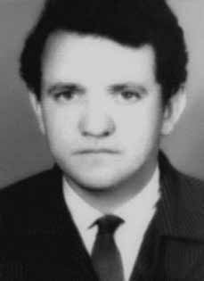

Olavo
Hanssen
BIOGRAFIA
Olavo Hanssen foi o primeiro operário morto, sob tortura, nas dependências do Deops de São Paulo. Militante do Partido Operário Revolucionário Trotskista (Port), trabalhava em uma indústria química em Santo André. Foi detido, com mais 18 pessoas, próximo ao estádio da Vila Maria Zélia, no bairro do Belenzinho, em São Paulo, no dia 1º de maio de 1970, quando distribuía panfletos durante a comemoração do Dia do Trabalho. Após dias de tortura, sem que recebesse assistência médica efetiva, veio a falecer, aos 32 anos, no dia 8 de maio.
Cinco dias depois, sua família foi avisada pela polícia de que ele teria se suicidado no dia 9 e de que seu corpo havia sido encontrado em um terreno baldio no bairro do Ipiranga. Para respaldar o suposto suicídio por envenenamento, chegaram a lhe injetar o inseticida Paration, no Hospital do Exército, no bairro do Cambuci, para onde havia sido levado, já em coma, sem a mínima chance de sobrevivência.
Segundo o jornalista Elio Gaspari, seu assassinato foi um primeiro “embaraço” ao governo Médici, que buscava negar a existência de tortura em suas prisões. Seu caso obteve a primeira condenação do Estado brasileiro pela Comissão Interamericana de Direitos Humanos da Organização dos Estados Americanos (OEA). Também foi feita uma queixa junto à Organização Internacional do Trabalho (OIT).
Hanssen, que usava o codinome “Alfredo” e tinha o apelido de “Totó”, ingressou no Port em 1961. Após seu partido ter decidido pela proletarização de seus quadros, abandonou o segundo ano do curso de Engenharia de Minas da Escola Politécnica da Universidade de São Paulo (USP) e começou a trabalhar na Massari S.A., uma fábrica de carrocerias no bairro de Vila Maria, em São Paulo. Foi ainda membro da União Nacional dos Estudantes (UNE) e filiado ao Sindicato dos Metalúrgicos de São Paulo.
Em 29 de fevereiro de 1996, reconheceu-se a responsabilidade do Estado brasileiro pela morte de Olavo Hanssen, no caso 82/96 da Comissão Especial sobre Mortos e Desaparecidos Políticos (CEMDP). O relator do caso, general Oswaldo Pereira Gomes, destacou que “[…] é inaceitável a versão de suicídio e encontro do cadáver em via pública”. Em Mauá, cidade para onde havia mudado com sua família em 1954, há uma escola estadual com o seu nome.
Olavo Hanssen was the first worker killed, under torture, on the premises of Deops in São Paulo. A militant of the Trotskyist Revolutionary Workers' Party (Port), he worked in a chemical industry in Santo André. He was arrested, along with 18 other people, near the Vila Maria Zélia stadium, in the Belenzinho neighborhood, in São Paulo, on May 1, 1970, when he was distributing leaflets during the Labor Day celebration. After days of torture, without receiving effective medical assistance, he died, aged 32, on May 8th.
Five days later, his family was informed by the police that he had committed suicide on the 9th and that his body had been found in a vacant lot in the Ipiranga neighborhood. To support the supposed suicide by poisoning, they even injected him with the insecticide Paration, at the Army Hospital, in the Cambuci neighborhood, where he had been taken, already in a coma, without the slightest chance of survival.
According to journalist Elio Gaspari, his murder was a first “embarrassment” for the Médici government, which sought to deny the existence of torture in its prisons. His case obtained the first conviction of the Brazilian State by the Inter-American Commission on Human Rights of the Organization of American States (OAS). A complaint was also made to the International Labor Organization (ILO).
Hanssen, who used the code name “Alfredo” and had the nickname “Totó”, joined Port in 1961. After his party decided to proletarianize its staff, he abandoned the second year of the Mining Engineering course at the Polytechnic School of the University of São Paulo (USP) and began working at Massari S.A., a body factory in the Vila Maria neighborhood, in São Paulo. He was also a member of the National Union of Students (UNE) and affiliated with the São Paulo Metalworkers Union.
On February 29, 1996, the responsibility of the Brazilian State for the death of Olavo Hanssen was recognized, in case 82/96 of the Special Commission on Political Deaths and Disappearances (CEMDP). The case rapporteur, General Oswaldo Pereira Gomes, highlighted that “[…] the version of suicide and finding the body on public roads is unacceptable”. In Mauá, the city where he moved with his family in 1954, there is a state school named after him.
Olavo Hanssen fue el primer trabajador asesinado bajo tortura en las instalaciones del Deops en São Paulo. Militante del Partido Revolucionario de los Trabajadores (Puerto), trotskista, trabajó en una industria química en Santo André. Fue detenido, junto con otras 18 personas, cerca del estadio Vila Maria Zélia, en el barrio de Belenzinho, en São Paulo, el 1 de mayo de 1970, cuando repartía folletos durante la celebración del Día del Trabajo. Tras días de tortura, sin recibir asistencia médica eficaz, falleció, a los 32 años, el 8 de mayo.
Cinco días después, la policía informó a su familia que se había suicidado el día 9 y que su cuerpo había sido encontrado en un terreno baldío del barrio de Ipiranga. Para sustentar el supuesto suicidio por envenenamiento, incluso le inyectaron el insecticida Paration, en el Hospital del Ejército, en el barrio de Cambuci, donde había sido llevado, ya en coma, sin la más mínima posibilidad de sobrevivir.
Según el periodista Elio Gaspari, su asesinato supuso un primer “bochorno” para el gobierno de Médici, que pretendía negar la existencia de tortura en sus prisiones. Su caso obtuvo la primera condena del Estado brasileño por parte de la Comisión Interamericana de Derechos Humanos de la Organización de Estados Americanos (OEA). También se presentó una denuncia ante la Organización Internacional del Trabajo (OIT).
Hanssen, que usaba el nombre clave “Alfredo” y tenía el sobrenombre de “Totó”, ingresó en Port en 1961. Después de que su partido decidió proletarizar su personal, abandonó el segundo año de la carrera de Ingeniería de Minas en la Escuela Politécnica de la Universidad de São Paulo (USP) y comenzó a trabajar en Massari S.A., una fábrica de carrocerías en el barrio de Vila Maria, en São Paulo. También fue miembro de la Unión Nacional de Estudiantes (UNE) y afiliado al Sindicato de Trabajadores Metalúrgicos de São Paulo.
El 29 de febrero de 1996 se reconoció la responsabilidad del Estado brasileño por la muerte de Olavo Hanssen, en el caso 82/96 de la Comisión Especial sobre Muertes y Desapariciones Políticas (CEMDP). El relator del caso, general Oswaldo Pereira Gomes, destacó que “[…] la versión del suicidio y del hallazgo del cuerpo en la vía pública es inaceptable”. En Mauá, ciudad donde se mudó con su familia en 1954, hay una escuela pública que lleva su nombre.
CIRCUNSTÂNCIAS DA MORTE
Os fatos em torno da morte de Olavo Hanssen tem como estopim a prisão efetivada no dia 1o de maio de 1970, na comemoração pelo Dia Internacional dos Trabalhadores. Foi a primeira grande manifestação depois do golpe de 1964, convocada por treze sindicatos e oposições. Havia cerca de 500 pessoas no estádio Maria Zélia, em São Paulo.
Logo na chegada, Olavo percebeu que o lugar estava sendo policiado. Avisou aos militantes e juntos começaram a deixar o local. Entretanto, a movimentação foi percebida e Olavo foi preso com mais dezoito pessoas. O grupo foi levado ao 1o Distrito Policial-Sé, depois ao Quartel General da Polícia Militar. À tarde, eles foram levados para a Oban (Operação Bandeirantes), mas em vista da prisão dos militantes da Vanguarda Popular Revolucionária (VPR), no dia 2 de maio, todos foram transferidos para o DOPS.
Olavo ficou na cela nº 2, com presos políticos da Ação Libertadora Nacional (ALN), do PORT e do Partido Comunista Brasileiro (PCB). De acordo com a versão oficial, divulgada no dia 13 de maio de 1970, Olavo Hanssen teria se suicidado ao ingerir veneno, conhecido por Portion, tendo sido encontrado em terreno baldio próximo ao Museu do Ipiranga no dia 9 de maio de 1970. Nesse mesmo dia, a família foi avisada por funcionário do Instituto Médico Legal (IML), que não quis identificar-se por medo de represálias, segundo Alice Hanssen, conforme relatado em audiência pública na Comissão da Verdade do Estado de São Paulo “Rubens Paiva”, realizada em 18 de novembro de 2013.
Contudo, a versão oficial sempre foi contestada. Vários companheiros de militância que estavam no DOPS afirmam que Olavo morreu em decorrência das torturas a que foi submetido na cadeia. De acordo com depoimento escrito de Dulce Querino de Carvalho Muniz, encaminhado à CEMDP, já nos primeiros dias de prisão, Olavo havia sido torturado (sofreu queimaduras, palmatórias nos pés e nas mãos, espancamentos, “paude-arara”) para que revelasse onde ficava a gráfica do PORT. Dulce relatou ainda que no dia 8 de maio de 1970 desceu do interrogatório e como de costume Olavo quis falar com ela. Contudo, ele estava tão debilitado que os companheiros de cela tiveram de carregá-lo pelos dois braços até a janelinha da porta para que pudesse falar com ela.
Nessa mesma noite, ele foi levado em coma para o Hospital. Dulce Muniz afirma ainda que conforme o preso político Waldemar Tebaldi, que era médico, Hanssen precisava ser imediatamente levado ao hospital, pois seus rins já não funcionavam mais. Os presos políticos exigiram que fosse chamado um médico para lhe prestar assistência, o que só foi realizado em 6 de maio. Além dos ferimentos visíveis por todo o corpo, ele apresentava sinais evidentes de complicações renais, anuria e edema das pernas.
O médico que o assistiu, José Geraldo Ciscato, lotado no DEPS/SP, na época, recomendou somente que ingerisse água, providenciando curativos em alguns ferimentos superficiais. Seu estado agravou-se dia a dia. Seus companheiros de cela promoveram manifestações coletivas para que fosse providenciada assistência médica efetiva, mas não obtiveram êxito. Somente em 8 de maio, quando Olavo já se encontrava em estado de coma, Ciscato voltou a vê-lo, dando ordens para que fosse removido para um hospital, deixando claro que ele não tinha a mínima chance de sobrevivência. Foi levado às pressas para o Hospital do Exército no bairro do Cambuci.
Geraldo Siqueira, à época militante do PORT, detido junto com o dirigente, em audiência pública realizada no dia 18 de novembro de 2013 pela Comissão da Verdade do Estado de São Paulo, afirmou que Olavo foi o maior alvo das torturas em razão de sua posição de direção e por já ser conhecido pelos agentes repressivos devido às prisões anteriores. Os torturadores tinham dois objetivos: “obter mais informações sobre o trotskismo no Rio Grande do Sul e destruir a “gráfica do PORT‟”. A presa política Maria Auxiliadora Lara Barcellos denunciou o assassinato, em 17 de novembro de 1970, diante do Conselho Especial de Justiça do Exército, reunido na 1a Auditoria, tendo afirmado, em suas declarações que “não cometeu crime algum […] nem eu, nem qualquer indiciado em outra organização, pois os verdadeiros criminosos são outros; se há alguém que tenha que comparecer em Juízo, esse alguém são os representantes desta ditadura implantada no Brasil, para defender interesses de grupos estrangeiros que espoliam as nossas riquezas e exploram o trabalho do nosso povo; […] além desses crimes, o crime de haver torturado até à morte brasileiros valorosos como João Lucas, Mário Alves, Olavo Hansen e Chael Charles […]”. Maurice Politi e Rafael Martinelli, que estiveram na mesma cela que Olavo no DOPS, confirmaram em audiência pública realizada no dia 18 de novembro de 2013 pela Comissão da Verdade do Estado de São Paulo, que Olavo tinha a sua saúde bastante comprometida, em razão das torturas sofridas.
Maurice Politi relatou que “a nossa indignação do caso do Olavo Hanssen foi tão grande porque vimos ele chegando da tortura e eu me lembro dessa imagem muito forte, eu e o Rafael deitado ao lado dele e ele urinando sangue, manchando o colchão. E realmente aí a gente ficou apavorado porque aquele sangue…”. Rafael Martinelli conta que o delegado Josecir Cuoco era quem comandava as equipes de tortura de Olavo. Há outros elementos materiais que contribuem para a desconstrução da versão oficial, como os próprios documentos oficiais do DOPS e da Justiça Militar, que são contraditórios.
A certidão de óbito, datada de 15 de maio de 1970, e assinado pelo médico legista Dr. Geraldo Rebello, informa que a vítima morreu no dia 9 de maio de 1970, mas não informa o local e apresentando causa de morte indeterminada. O laudo de exame de corpo de delito, datado de 15 de maio de 1970, informa que o corpo deu entrada no IML às 16 horas do dia 9 de maio de 1970, e que se encontrava no Hospital Geral do Exército. O exame necroscópico foi realizado pelo Dr. Geraldo Rebello e por Augusto Queiroz Gomes e concluiu que a vítima tinha “ferimento ovalar contuso na perna direita, duas escoriações na perna esquerda, escoriações no escroto, hematoma no couro cabeludo‟.
O exame toxicológico, de 1 de junho de 1970, informa que o exame deu “positivo para paration”, que é um pesticida agrícola. A autópsia revelou traqueia, esôfago e estômago limpos. Essas informações desencontradas permitem inferir que a vítima não havia ingerido paration, pois não havia vestígios nos órgãos do sistema digestivo, tendo falecido por complicações renais decorrentes das torturas a que foi submetido. Além disso, há incongruência quanto ao local de morte da vítima, pois a versão oficial tanto aduz que foi encontrado em terreno baldio, como no Hospital do Exército.
À época de sua morte, foi instaurado um Inquérito Policial Militar (IPM), presidido pelo delegado Sylvio Pereira Machado e acompanhado pelo promotor Dr. José Veríssimo de Mello, com o objetivo de apurar a morte de Olavo Hanssen. O IPM ouviu como testemunhas somente agentes estatais, que confirmaram que a vítima não apresentava sinais de sevícia ou maus tratos. O delegado de polícia Josecir Cuoco afirmava que Olavo estava no DOPS e aparentava boa aparência. O Delegado de polícia Ernesto Milton Dias afirmou que quando o viu na prisão não notou qualquer anormalidade nele. Contudo, o agente policial Dirceu Melo, de plantão no dia 8 de maio de 1970 asseverou que Olavo o chamou e lhe disse que não se sentia bem e pediu para ser atendido por um médico.
O inquérito policial concluiu que a morte de Olavo se deu por envenenamento. O Ministério Público acompanhou o IPM e arquivou o processo. Contudo, a 2a Auditoria da 2a Circunscrição de Justiça Militar decidiu que “improcede, objetivamente, que Olavo cometeu suicídio. O que procede é a afirmação, estribada em elementos de certeza, de que era portador de problemas renais”. Assim, a Justiça Militar contradisse a versão oficial de suicídio, tentando configurar a morte como sendo de causa natural, reforçando as incongruências.
Recentemente, a perícia da Comissão Nacional da Verdade (CNV), ao realizar exame documentoscópico, concluiu que a partir do dia 21 de maio de 1970, os documentos relativos à morte de Olavo Hanssen, inclusive os laudos, modificaram a informação anterior da causa de sua morte para “morte por envenenamento por paration”, denotando uma dinâmica de contrainformação produzida pelos órgãos da repressão com o objetivo de dificultar a apuração das circunstâncias de morte da vítima.
O enterro de Olavo Hanssen ocorreu no dia 14 de maio de 1970, no Cemitério de Mauá.
The events surrounding Olavo Hanssen's death were triggered by his arrest on May 1, 1970, during the celebration of International Workers' Day. It was the first major demonstration after the 1964 coup, called by thirteen unions and oppositions. There were around 500 people at the Maria Zélia stadium, in São Paulo.
Upon arrival, Olavo realized that the place was being policed. He notified the militants and together they began to leave the place. However, the movement was noticed and Olavo was arrested along with eighteen other people. The group was taken to the 1st Police District-Sé, then to the Military Police Headquarters. In the afternoon, they were taken to Oban (Operation Bandeirantes), but in view of the arrest of the Vanguarda Popular Revolucionária (VPR) militants, on May 2, they were all transferred to the DOPS.
Olavo stayed in cell number 2, with political prisoners from Ação Libertadora Nacional (ALN), PORT and the Brazilian Communist Party (PCB). According to the official version, released on May 13, 1970, Olavo Hanssen committed suicide by ingesting poison, known as Portion, and was found in vacant land near the Ipiranga Museum on May 9, 1970. That same day, the family was notified by an employee of the Legal Medical Institute (IML), who did not want to be identified for fear of reprisals, according to Alice Hanssen, as reported in a public hearing at the Legal Medicine Commission. Truth of the State of São Paulo “Rubens Paiva”, held on November 18, 2013.
However, the official version has always been contested. Several fellow activists who were in the DOPS claim that Olavo died as a result of the torture he was subjected to in prison. According to a written statement from Dulce Querino de Carvalho Muniz, sent to CEMDP, in the first days of his imprisonment, Olavo had been tortured (he suffered burns, spankings on his feet and hands, beatings, “paude-arara”) to reveal where the PORT print shop was located. Dulce also reported that on May 8, 1970, she came down from the interrogation and, as usual, Olavo wanted to talk to her. However, he was so weak that his cellmates had to carry him by both arms to the small window in the door so he could talk to her.
That same night, he was taken to the hospital in a coma. Dulce Muniz also states that according to political prisoner Waldemar Tebaldi, who was a doctor, Hanssen needed to be immediately taken to the hospital, as his kidneys were no longer working. The political prisoners demanded that a doctor be called to provide assistance, which was only carried out on May 6th. In addition to visible injuries all over his body, he showed obvious signs of kidney complications, anuria and leg edema.
The doctor who assisted him, José Geraldo Ciscato, working at DEPS/SP at the time, only recommended that he drink water, providing bandages for some superficial wounds. His condition worsened day by day. His cellmates promoted collective demonstrations to provide effective medical assistance, but were unsuccessful. Only on May 8, when Olavo was already in a coma, Ciscato saw him again, giving orders for him to be removed to a hospital, making it clear that he had no chance of survival. He was rushed to the Army Hospital in the Cambuci neighborhood.
Geraldo Siqueira, at the time a member of PORT, detained together with the leader, in a public hearing held on November 18, 2013 by the Truth Commission of the State of São Paulo, stated that Olavo was the biggest target of torture due to his leadership position and because he was already known by repressive agents due to previous arrests. The torturers had two objectives: “to obtain more information about Trotskyism in Rio Grande do Sul and to destroy the “PORT printing press”. Political prisoner Maria Auxiliadora Lara Barcellos denounced the murder, on November 17, 1970, before the Special Council of Justice of the Army, meeting in the 1st Audit, having stated, in her statements that “she did not commit any crime [...] neither I, nor anyone indicted in another organization, as the real criminals are others; If there is anyone who has to appear in court, it is the representatives of this dictatorship established in Brazil, to defend the interests of foreign groups that plunder our wealth and exploit the work of our people; […] in addition to these crimes, the crime of having tortured to death valuable Brazilians such as João Lucas, Mário Alves, Olavo Hansen and Chael Charles […]”. Maurice Politi and Rafael Martinelli, who were in the same cell as Olavo at the DOPS, confirmed in a public hearing held on November 18, 2013 by the Truth Commission of the State of São Paulo, that Olavo's health was seriously compromised, due to the torture he suffered.
Maurice Politi reported that "our indignation over Olavo Hanssen's case was so great because we saw him arriving from torture and I remember this very strong image, Rafael and I lying next to him and him urinating blood, staining the mattress. And really then we were terrified because that blood...". Rafael Martinelli says that delegate Josecir Cuoco was the one who commanded Olavo's torture teams. There are other material elements that contribute to the deconstruction of the official version, such as the official DOPS and Military Justice documents themselves, which are contradictory.
The death certificate, dated May 15, 1970, and signed by coroner Dr. Geraldo Rebello, states that the victim died on May 9, 1970, but does not inform the location and presents an undetermined cause of death. The forensic examination report, dated May 15, 1970, states that the body was admitted to the IML at 4 pm on May 9, 1970, and that it was at the Army General Hospital. The necroscopic examination was carried out by Dr. Geraldo Rebello and Augusto Queiroz Gomes and concluded that the victim had a “blunt oval wound on the right leg, two abrasions on the left leg, abrasions on the scrotum, hematoma on the scalp”.
The toxicological examination, dated June 1, 1970, reports that the test was “positive for parathion”, which is an agricultural pesticide. The autopsy revealed a clean trachea, esophagus and stomach. This conflicting information allows us to infer that the victim had not ingested parathion, as there were no traces in the organs of the digestive system, having died from kidney complications resulting from the torture to which he was subjected. Furthermore, there is inconsistency regarding the victim's place of death, as the official version states that he was found in a vacant lot, as well as in the Army Hospital.
At the time of his death, a Military Police Inquiry (IPM) was opened, chaired by police chief Sylvio Pereira Machado and accompanied by prosecutor Dr. José Veríssimo de Mello, with the aim of investigating the death of Olavo Hanssen. The IPM heard only state agents as witnesses, who confirmed that the victim showed no signs of abuse or mistreatment. Police chief Josecir Cuoco stated that Olavo was in the DOPS and looked good. Police Chief Ernesto Milton Dias stated that when he saw him in prison he did not notice any abnormalities in him. However, police officer Dirceu Melo, on duty on May 8, 1970, stated that Olavo called him and told him that he did not feel well and asked to be seen by a doctor.
The police investigation concluded that Olavo's death was due to poisoning. The Public Ministry followed the IPM and archived the case. However, the 2nd Audit of the 2nd Military Justice District decided that "it is objectively unfounded that Olavo committed suicide. What is true is the statement, based on elements of certainty, that he had kidney problems." Thus, the Military Court contradicted the official version of suicide, trying to classify the death as being of natural cause, reinforcing the inconsistencies.
Recently, the expertise of the National Truth Commission (CNV), when carrying out a document examination, concluded that as of May 21, 1970, the documents relating to the death of Olavo Hanssen, including the reports, changed the previous information on the cause of his death to “death due to parathion poisoning”, denoting a dynamic of counter-information produced by the repression bodies with the aim of making it difficult to determine the circumstances of the victim's death.
Olavo Hanssen's burial took place on May 14, 1970, at the Mauá Cemetery.
Los acontecimientos que rodearon la muerte de Olavo Hanssen tuvieron como desencadenante su detención el 1 de mayo de 1970, durante la celebración del Día Internacional de los Trabajadores. Fue la primera gran manifestación tras el golpe de 1964, convocada por trece sindicatos y oposiciones. Había alrededor de 500 personas en el estadio Maria Zélia, en São Paulo.
Al llegar, Olavo se percató que el lugar estaba siendo vigilado. Avisó a los militantes y juntos comenzaron a abandonar el lugar. Sin embargo, el movimiento fue advertido y Olavo fue detenido junto a otras dieciocho personas. El grupo fue trasladado al 1.º Distrito de Policía-Sé y luego a la Jefatura de la Policía Militar. Por la tarde fueron trasladados a Oban (Operación Bandeirantes), pero ante la detención de militantes de la Vanguarda Popular Revolucionaria (VPR), el 2 de mayo, todos fueron trasladados al DOPS.
Olavo permaneció en la celda número 2, con presos políticos de la Ação Libertadora Nacional (ALN), PORT y el Partido Comunista Brasileño (PCB). Según la versión oficial, difundida el 13 de mayo de 1970, Olavo Hanssen se suicidó ingiriendo veneno, conocido como Porción, y fue encontrado en un terreno baldío cerca del Museo de Ipiranga el 9 de mayo de 1970. Ese mismo día, la familia fue notificada por un empleado del Instituto Médico Legal (IML), que no quiso ser identificado por temor a represalias, según Alice Hanssen, según informó en audiencia pública en la Comisión de Medicina Legal. Verdad del Estado de São Paulo “Rubens Paiva”, realizada el 18 de noviembre de 2013.
Sin embargo, la versión oficial siempre ha sido cuestionada. Varios compañeros activistas que estaban en el DOPS afirman que Olavo murió como consecuencia de las torturas a las que fue sometido en prisión. Según declaración escrita de Dulce Querino de Carvalho Muniz, enviada al CEMDP, en los primeros días de su encarcelamiento, Olavo había sido torturado (sufría quemaduras, azotes en pies y manos, golpes, “paude-arara”) para revelar dónde estaba ubicada la imprenta PORT. Dulce también relató que el 8 de mayo de 1970 bajó del interrogatorio y, como de costumbre, Olavo quiso hablar con ella. Sin embargo, estaba tan débil que sus compañeros de celda tuvieron que llevarlo de ambos brazos hasta la pequeña ventana de la puerta para que pudiera hablar con ella.
Esa misma noche lo llevaron al hospital en coma. Dulce Muñiz también afirma que según el preso político Waldemar Tebaldi, quien era médico, Hanssen debió ser trasladado inmediatamente al hospital, ya que sus riñones ya no funcionaban. Los presos políticos exigieron que se llamara a un médico para brindarles asistencia, lo que no se llevó a cabo hasta el 6 de mayo. Además de lesiones visibles en todo el cuerpo, mostraba signos evidentes de complicaciones renales, anuria y edema en las piernas.
El médico que lo atendió, José Geraldo Ciscato, que en ese momento trabajaba en el DEPS/SP, sólo le recomendó beber agua y le proporcionó vendajes para algunas heridas superficiales. Su condición empeoraba día a día. Sus compañeros de celda promovieron manifestaciones colectivas para brindar asistencia médica efectiva, pero no tuvieron éxito. Recién el 8 de mayo, cuando Olavo ya se encontraba en coma, Ciscato lo volvió a ver, dando orden de que lo trasladaran a un hospital, dejando claro que no tenía posibilidades de sobrevivir. Fue trasladado de urgencia al Hospital Militar del barrio de Cambuci.
Geraldo Siqueira, entonces militante de PORT, detenido junto al dirigente, en audiencia pública celebrada el 18 de noviembre de 2013 por la Comisión de la Verdad del Estado de São Paulo, afirmó que Olavo era el mayor blanco de tortura por su posición de liderazgo y porque ya era conocido por los agentes represores por detenciones anteriores. Los torturadores tenían dos objetivos: “obtener más información sobre el trotskismo en Rio Grande do Sul y destruir la “imprenta PORT”. La prisionera política María Auxiliadora Lara Barcellos denunció el asesinato, el 17 de noviembre de 1970, ante el Consejo Especial de Justicia del Ejército, reunido en la 1ª Auditoría, habiendo afirmado, en sus declaraciones, que “ella no cometió ningún delito [...] ni yo, ni nadie imputado en otra organización, ya que los verdaderos criminales son otros; Si hay alguien que tiene que comparecer ante los tribunales son los representantes de esta dictadura instaurada en Brasil, para defender los intereses de grupos extranjeros que saquean nuestras riquezas y explotan el trabajo de nuestro pueblo; […] además de estos crímenes, el de haber torturado hasta la muerte a valiosos brasileños como João Lucas, Mário Alves, Olavo Hansen y Chael Charles […]”. Maurice Politi y Rafael Martinelli, que se encontraban en la misma celda que Olavo en el DOPS, confirmaron en audiencia pública celebrada el 18 de noviembre de 2013 por la Comisión de la Verdad del Estado de São Paulo, que la salud de Olavo estaba gravemente comprometida, debido a las torturas que sufrió.
Maurice Politi relató que “fue tanta nuestra indignación por el caso de Olavo Hanssen porque lo vimos llegar de la tortura y recuerdo esta imagen muy fuerte, Rafael y yo acostados a su lado y él orinando sangre, manchando el colchón. Y realmente entonces nos aterrorizamos porque esa sangre…”. Rafael Martinelli dice que el delegado Josecir Cuoco fue quien comandó los equipos de tortura de Olavo. Hay otros elementos materiales que contribuyen a la deconstrucción de la versión oficial, como los propios documentos oficiales del DOPS y de la Justicia Militar, que son contradictorios.
El certificado de defunción, fechado el 15 de mayo de 1970 y firmado por el médico forense Dr. Geraldo Rebello, señala que la víctima falleció el 9 de mayo de 1970, pero no informa el lugar y presenta una causa de muerte indeterminada. El informe del examen forense, de fecha 15 de mayo de 1970, señala que el cadáver ingresó al IML a las 4 de la tarde del 9 de mayo de 1970 y que se encontraba en el Hospital General del Ejército. El examen necroscópico fue realizado por el Dr. Geraldo Rebello y Augusto Queiroz Gomes y concluyó que la víctima tenía una “herida contusa ovalada en la pierna derecha, dos abrasiones en la pierna izquierda, abrasiones en el escroto, hematoma en el cuero cabelludo”.
El examen toxicológico, fechado el 1 de junio de 1970, informa que la prueba fue “positiva en paratión”, que es un pesticida agrícola. La autopsia reveló que la tráquea, el esófago y el estómago estaban limpios. Esta información contradictoria permite inferir que la víctima no había ingerido paratión, ya que no se encontraron rastros en los órganos del sistema digestivo, habiendo fallecido por complicaciones renales derivadas de las torturas a las que fue sometido. Además, existe inconsistencia sobre el lugar de muerte de la víctima, pues la versión oficial señala que fue encontrada en un terreno baldío, así como en el Hospital del Ejército.
Al momento de su muerte, se abrió una Investigación de la Policía Militar (IPM), presidida por el jefe policial Sylvio Pereira Machado y acompañada por el fiscal Dr. José Veríssimo de Mello, con el objetivo de investigar la muerte de Olavo Hanssen. El IPM escuchó únicamente como testigos a agentes estatales, quienes confirmaron que la víctima no presentaba signos de abuso o maltrato. El jefe de policía Josecir Cuoco afirmó que Olavo estaba en el DOPS y se veía bien. El jefe de policía Ernesto Milton Dias afirmó que cuando lo vio en prisión no notó ninguna anomalía en él. Sin embargo, el policía Dirceu Melo, de turno el 8 de mayo de 1970, afirmó que Olavo lo llamó y le dijo que no se sentía bien y pidió ser atendido por un médico.
La investigación policial concluyó que la muerte de Olavo se debió a un envenenamiento. El Ministerio Público dio seguimiento al IPM y archivó el caso. Sin embargo, la 2da Auditoría del 2do Distrito de Justicia Militar resolvió que "es objetivamente infundado que Olavo se suicidó. Lo que sí es cierto es la afirmación, basada en elementos de certeza, de que tenía problemas renales". Así, el Tribunal Militar contradijo la versión oficial del suicidio, intentando calificar la muerte como de causa natural, reforzando las inconsistencias.
Recientemente, la pericia de la Comisión Nacional de la Verdad (CNV), al realizar un examen documental, concluyó que a partir del 21 de mayo de 1970, los documentos relativos a la muerte de Olavo Hanssen, incluidos los informes, cambiaron la información anterior sobre la causa de su muerte a “muerte por envenenamiento con paratión”, denotando una dinámica de contrainformación producida por los órganos de represión con el objetivo de dificultar la determinación de las circunstancias de la muerte de la víctima.
El entierro de Olavo Hanssen tuvo lugar el 14 de mayo de 1970, en el Cementerio de Mauá.